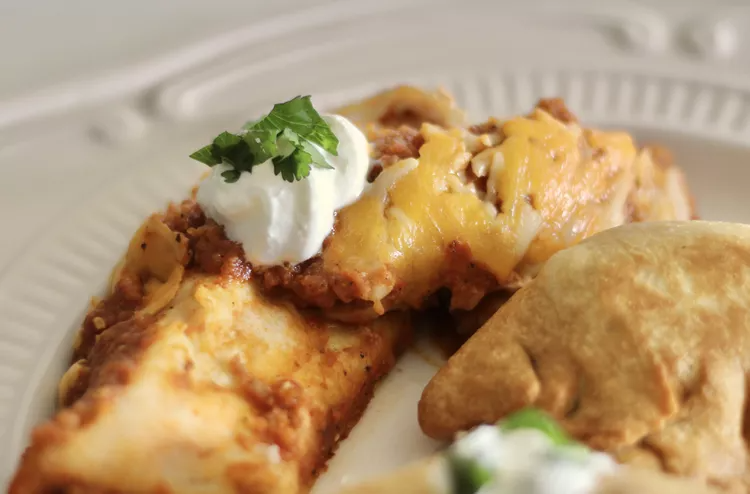

Green Chili Chicken Enchiladas

Description
Pretty simple enchiladas filled with chicken, cheese, and tomatoes, covered with green chili sauce and cheese.
Ingredients
- 2 (5 ounce) skinless, boneless chicken thighs, cut into chunks
- 2 teaspoons taco seasoning mix, or to taste
- 1 tablespoon olive oil
- ½ medium onion, chopped
- 2 (14.5 ounce) cans diced tomatoes
- 1 (4 ounce) can diced green chile peppers
- 2 cloves garlic, minced
- 1 teaspoon ground cumin
- ½ teaspoon salt
- ¼ teaspoon ground black pepper
- 8 (8 inch) flour tortillas
- 1 ½ cups shredded Mexican cheese blend, or to taste
Steps
- Sprinkle chicken liberally with taco seasoning.
- Heat oil in a skillet over medium heat. Add seasoned chicken and saute until no longer pink in the center and the juices run clear, 8 to 10 minutes. Remove from the skillet and allow to cool.
- Preheat the oven to 350 degrees F (175 degrees C).
- Add onion to the same skillet and saute until soft and translucent, 5 to 7 minutes. Transfer to a blender and add 1 can diced tomatoes with liquid, diced green chile peppers, garlic, cumin, salt, and pepper. Blend until sauce is smooth.
- Dice cooled chicken and transfer to a bowl. Drain remaining can of diced tomatoes; discard liquid and add tomatoes to the chicken.
- Place about 1/4 cup chicken mixture in the middle of a tortilla. Add 2 tablespoons shredded cheese, then roll tortilla up. Place seam-side down in a baking pan. Repeat to make remaining enchiladas.
- Cover enchiladas with sauce and spread remaining cheese over top. Cover the pan with aluminum foil.
- Bake in the preheated oven until hot and bubbly, about 30 minutes.
Main Page